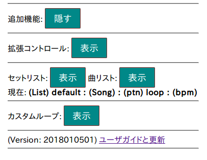
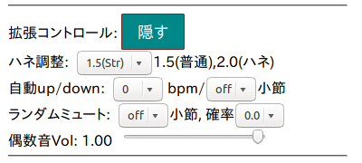
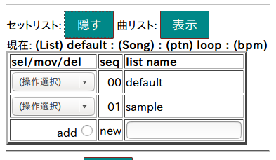
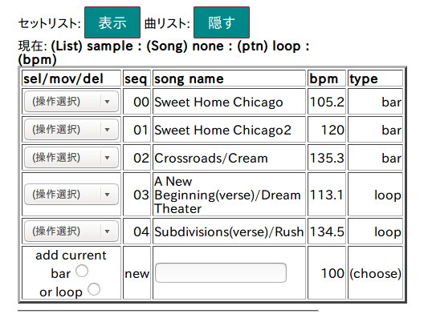
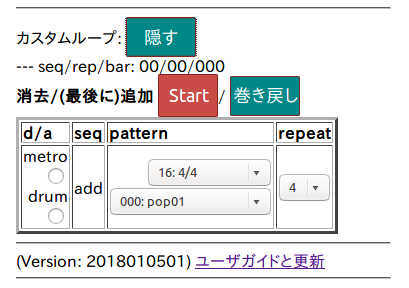
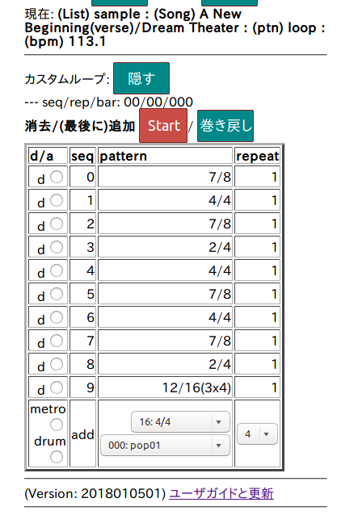

JavaScript メトロノームversion2 マニュアル
このスクリーンショットはクリックできません

1. 基本操作
操作画面の上から、左から右の順に説明します。
スマートフォンを使う場合は横長画面にしたほうが使いやすい
バージョンアップを繰り返すとキャッシュで消費される
ディスク(メモリ)容量が増えます。
各スマートフォンのアプリケーション管理メニューでWebブラウザの
キャッシュをときどき消すとよいでしょう。
- JP/USボタン: 表示言語の切り替え
- Start/Stopボタン: 再生の開始と修正
- メトロ/ドラム(checkbox): どちらを再生するか選ぶ。
ただし、パターンを変更すると、ボタンのチェックは自動的に変わる
- メトロ右のセレクタ: クリックを選ぶ
- 音色: カウベル1つ(cowbell1から5)、2つ(2cowbell)、3つ(3cowbell)他
- ドラム右のセレクタ: ドラムパターンを選ぶ
ドラムパターンは、Jim Riley, ``Survival Guide for The Modern Drummer'',
Alfred Music, 2015. に収録されているものの一部。
- 声(checkbox): 音声カウントのon/off
- 声の右: 男声(male)/女声(female)
- 小数点の右のセレクタ: 微調整したいときに小数以下第1位を選択
- tap: 何度かクリックしてその平均テンポに設定
(数秒クリックをやめるとリセットされる)
- マイナス(-)ボタン: -1減らす
- スライダ: BPMを素早く変更できる (正確に合わせるのは難しい)
- プラス(+)ボタン: 1増やす
- タイマ: 秒か小節数で設定する(短い方で停まる)
- 追加機能ボタン: 追加機能のメニューの表示
- Version: 年月日の後の2桁は同じ日の中での番号
- 「ユーザガイドと更新」: ユーザガイドへのリンク
(別タブ(ウィンドウ)で表示される)
再生中、小節途中で変更すると次の小節の頭までが再生されません。
追加機能ボタンを押した状態
このスクリーンショットはクリックできません

各機能の「表示」を押すと、それぞれの操作メニューが表示されます。
- 拡張コントロール(ドラマー向け):
ハネ具合調整、テンポ自動up/down、ランダム小節ミュート、偶数クリック音量下げ
- 複数セットリストの作成と編集
- カスタムループ作成、編集、再生
2. 拡張コントロール(ドラマー向け)
このスクリーンショットはクリックできません

- 拡張コントロール: 「隠す」で表示を消す
- ハネ調整: swing/shuffleのパターンの場合だけ有効
-- ちょいハネにしたい場合は、1.5と2.0の間(例えば1.8)で調整できる
- 自動up/down: 指定小節数ごとにテンポを+10から-10bpm自動変更
-- 徐々に速くしながら練習したい場合に使う。
- ランダムミュート: 指定した小節数だけ無音になる。確率1.0にすると、
1小節ずつ交互に有音/無音になる。
タイム感のトレーニング用
- 偶数音Vol: 表音を小さくする
-- 裏をしっかり合わせるためのリズムトレーニング用
例えば、0.0にすると8ビートの偶数音が無音になる。
3連の場合は始めの2音が小さくなる。
3. 複数セットリストの作成と編集
テンポを確認するためのセットリスト(演奏順にならべた曲のリスト)
を作っておくと、ライブ演奏のさいに便利です。
defaultに追加した曲は自動的に保存されますが、日付や
ギグの名前の新しいリストをつくるとさらに便利です。
sampleは編集できますが、保存できません。
複数セットリストの管理(セットリスト表示ボタンを押した状態)
このスクリーンショットはクリックできません

- default: 操作選択で"select this" (初めて使うとき曲リストは空)
-- 選んだセットリストの曲リストが自動的に表示される
- sample: 操作選択で"select this" (お試し用、変更しても保存できない)
-- 選んだセットリストの曲リストが自動的に表示される(同上)
- add: 右のnewにセットリストの名前(日本語文字使用可)を入れてから、addボタン
-- 空(曲なし)のセットリストが作成される
- 順序変更: move to top(先頭に移動)、move after 番号(その番号の次に移動)、
delete this(これを削除)取り消せない
セットリストの例(sampleを選んだ状態)
このスクリーンショットはクリックできません

- 操作選択: select this, move to top, move after 番号, delete thisは
セットリストのリスト操作と同じです。
- typeの意味: barは1小節パターン、loopは自分で1小節パターンを
組み合わせて作った複数小節
- 曲の追加操作(ちょっと練習が必要)
-- 最初はbar(1小節パターン)で試しましょう。
- 追加登録したい1小節パターンかループを再生できる状態にして、
テンポも合わせておく
- 一番下の行の空欄に曲名を入れる。曲名が空でも登録できますが、
何を入れたかわからなくなります。
- add current bar、または (add current) loopのボタンを押す。
ループは未定義(空)だと登録できません。
4. プリセットパターンをつないだループ作成
このスクリーンショットはクリックできません

- d/a: delete(消去)、add((最後に)追加)、順序変更、内容変更は不可
- 一番下の行で、クリックパターンまたはドラムパターンを選択、
繰り返し回数(repeat)を選択
- クリックパターンを追加するときは、metroのボタンを押す
ドラムパターンのときはdrumのボタンを押す
- 表の上のStart/Stopで再生/停止、巻き戻しで先頭に戻る
-- 基本操作のStart/Stopと別ボタン
-- ループが終わると先頭から自動的に繰り返し再生
テンポは登録できません。基本操作のBPM設定で変更してください。
セットリストに追加登録するときは、先にテンポを設定してください。
ない機能
- 順序の変更、リピート回数の変更 (削除と追加だけ可)
- ループに別のループを登録
- セットリストに登録されたループの内容変更
--> ループを作りなおして、古いループを消してから登録してください。
- ループの保存 (セットリストに登録すればOK)
sampleに登録済のループの例
読みだしたサンプルのループは変更できますが、保存できません。
このスクリーンショットはクリックできません

- A New Beginning/Dream Theaterの歌が始まるところから
途中までの小節パターン
- かなり複雑な例です。実際には、4小節程度の単位で作ることが多いと
思います。
5. 収録したドラムパターンの概要
収録数: Fillを除く238パターン(20180107)
出典: Jim Riley, ``Survival Guide for The Modern Drummer'', Alfred Music, 2015.
一覧(番号がとんでいるところはfillの分)
- pop001--060: Chapter 1. Pop Drumming
-- Pop音楽のグルーブ(ロック含む)
- 001--010: 基本
- 011--020: シンコペーション
- 021--041: ゴーストノートを追加
- 41は16ビートswing
- 42は同じパターンで
hc(hihat close)、ho(hihat open)、rd(ride)、cr(crash)、ft(floor tom)の5種
- 51--53: four on the floor (4分音符のbass)、53はhihat両手でアクセント付き
- 54: hihat両手うち
- 55-56: hihat片手(右手)
- 57: 12/8バラード
- 58: change of pace (ゆっくりに切り替えるとき)
- 59, 60: タムグルーブ
- blues061--081: Chapter 2. Blues
- 061--071: (普通の)ブルーズ
- 078--081: 12/8、81はスイング
- swing087-138: Chapter 3. Swing (コンピングパターンは未収録)
- 087--098: ハイハット、ライド、クラッシュ、キックのバリエーション
- 136: タムビート
- 137--138: odd(奇数) time
- cntr139--172, train152-0158: Chapter 4. Country
- 139--147: スイング系のバリエーション
- 152--154: トレインビート (8分音符なので再生は180bpm以上がお薦め)
- 一部省略あり(そのうち追加)
- rock179--182, motown: Chapter 5. Early Rock and Motown
- 179--182: Early Rock (現代のロックはpopかmetal)
- 185--189: モータウン(デトロイト?)
- disco, machine: Chapter 6. Dance and Electronic
- disco: (古めの?)ダンス
- machine: 打ち込みビートを模倣
- NNN: Chapter 7. Funk and Fusion
- NNN: Chapter 8. Odd-Time(奇数) Signatures
-- いわゆる変拍子
- NNN: Chapter 9. Metal and Double Bass
- NNN: Chapter 10. Grooves from Around the World
世界のグルーブ
goto at kmgoto.jp